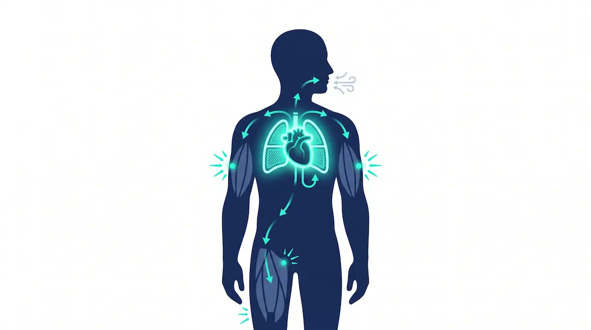
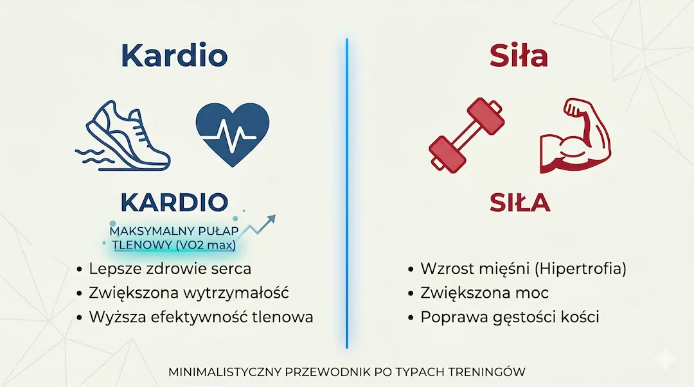

Szybka odpowiedź
U osób po 50-tce VO2max opisuje największą ilość tlenu, jaką organizm potrafi wykorzystać podczas intensywnego wysiłku, zwykle w ml/kg/min. Najdokładniej mierzy ją test wysiłkowy z analizą gazów; zegarek tworzy szacunek z tętna i tempa. Wyższa wydolność wiąże się w badaniach z niższym ryzykiem, ale nie jest gwarancją. Poprawia ją regularny ruch tlenowy wsparty siłą i regeneracją.
Kluczowe wnioski
- VO2max z zegarka jest estymacją i nie powinno się go porównywać 1:1 z wynikiem laboratoryjnym.
- Wydolność jest silnym markerem rokowniczym, lecz badania obserwacyjne nie dowodzą gwarancji długowieczności.
- Test 6-minutowego marszu ocenia funkcję marszową, a nie mierzy bezpośrednio VO2max.
- Najbezpieczniej budować bazę spokojnym wysiłkiem i dopiero później dodawać kontrolowane odcinki szybsze.
Co dokładnie oznacza VO2max?
Wartość opisuje maksymalną zdolność pobrania, transportu i wykorzystania tlenu podczas narastającego wysiłku. Zależy od serca, płuc, krwi, mięśni, genów i treningu. Wynik względny dzieli zużycie tlenu przez masę ciała, dlatego zmiana masy może zmienić liczbę bez identycznej zmiany wydolności absolutnej.
Znaczenie kondycji w całym planie omawia przewodnik powrotu do formy.

Czy zegarek mierzy VO2max wiarygodnie?
Zegarek szacuje wynik na podstawie zależności między tempem lub mocą a tętnem. Błąd rośnie przy złym pomiarze tętna, upale, terenie, lekach wpływających na puls i nietypowej ekonomii ruchu. Test krążeniowo-oddechowy mierzy wymianę gazową i jest właściwy, gdy wynik ma znaczenie diagnostyczne.
Porównuj trend w tym samym urządzeniu i podobnych warunkach; możliwości zegarka opisuje analiza mocy i pomiarów.

Jak poprawiać wydolność po 50-tce?
Zbuduj tygodniową regularność spokojnym marszem, rowerem lub pływaniem w tempie pozwalającym mówić zdaniami. Po kilku tygodniach stabilnej tolerancji można dodać krótkie odcinki szybsze, oddzielone pełnym zwolnieniem. Trening siłowy poprawia funkcję i odporność układu ruchu, ale nie zastępuje całkowicie bodźca tlenowego.
Połączenie obu form wyjaśnia artykuł o samym cardio oraz Centrum Treningu Siłowego.

Kiedy test wydolności wymaga nadzoru?
Nadzoru wymaga osoba z bólem w klatce, omdleniami, niekontrolowanym ciśnieniem, niestabilną chorobą serca lub wyraźną dusznością niewspółmierną do wysiłku. Test 6-minutowego marszu powinien mieć stałą trasę i te same warunki, ale nie służy do samodzielnego prowokowania maksymalnego wysiłku.
Jeżeli masz chorobę przewlekłą, punkt startu ustal na podstawie objawów i oceny przed treningiem.
| Metoda | Co daje? | Ograniczenie |
|---|---|---|
| Test z analizą gazów | Pomiar VO2peak lub VO2max | Wymaga sprzętu i nadzoru |
| Zegarek | Szacowany trend | Zależny od algorytmu |
| 6-minutowy marsz | Funkcję marszową | Nie mierzy bezpośrednio VO2max |
| Tempo rozmowy | Praktyczną intensywność | Nie jest badaniem diagnostycznym |
VO2max jest użytecznym wskaźnikiem możliwości układu krążenia i mięśni, a nie świadectwem gwarantowanej liczby lat życia.
Najczęściej zadawane pytania
Jaki VO2max jest dobry po 50-tce?
Normy zależą od płci, wieku, metody i populacji. Ważniejszy od losowej tabeli jest wiarygodny pomiar i własny trend.
Czy Apple Watch mierzy VO2max?
Szacuje wydolność na podstawie tętna i ruchu; nie analizuje gazów oddechowych jak test laboratoryjny.
Czy marsz poprawia VO2max?
Regularny szybki marsz może poprawiać wydolność, szczególnie u osoby wcześniej mało aktywnej. Bodziec musi być stopniowo progresowany.
Czy test 6-minutowy jest testem maksymalnym?
Nie. To submaksymalna ocena funkcjonalna wykonywana w możliwie szybkim, ale bezpiecznym tempie marszu.
VO2max rośnie najlepiej, gdy marsz, interwały i rower mają wsparcie mięśni. Siłową część planu znajdziesz w Centrum Treningu Siłowego po 50-tce.
Źródła
- Fitness and mortality - meta-analysis
- Fitness, BMI and mortality - meta-analysis
- AHA statement on cardiorespiratory fitness
- WHO physical activity guideline
Uwaga: Artykuł ma charakter informacyjny i edukacyjny. Nie zastępuje konsultacji, diagnozy ani indywidualnego leczenia.